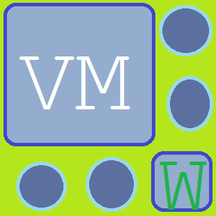

Welcome to the VWeb VM Engine launcher page!
Below are some options on getting started with your virtual machine
Microsoft
Windows VM
MS-DOS VM
Apple
MacOS Classic VM
MacOS X VM
OS X VM
MacOS VM
iOS VM
Linux: Ubuntu
Ubuntu VM
Lubuntu VM
Xubuntu VM
Edubuntu VM
Kubuntu VM
Ubuntu Mate VM
Ubuntu Budgie VM
Device emulation
iPhone series
Status: offline
Launcher version: 1